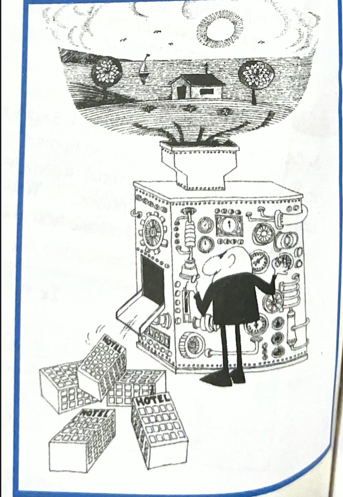

Ας σώσουμε τον πλανήτη μας, ένα βήμα τη φορά!
Ο άνθρωπος και η Θάλασσα..
Ο εξωγίηνος που βλέπει την Γή να καταστρέφεται!
Η ζωή μετα το λιόσιμο των πάγων!
Το μετά και το πρίν...
Οι κεραίες και οι ανεμογενίτριες στο μέλλον!
ΠλαγιόΤιτλος: Η κλιματική αλλαγή και οι συνέπειές της. ⛔
ΠλαγιόΤιτλος: Ο πολιτισμόs μπορεί και να βλάπτη! 🚫